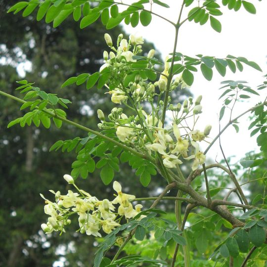
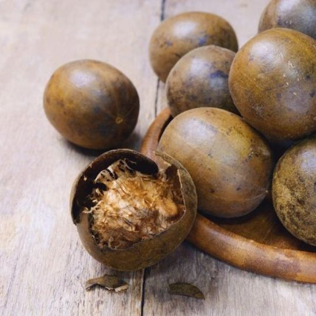
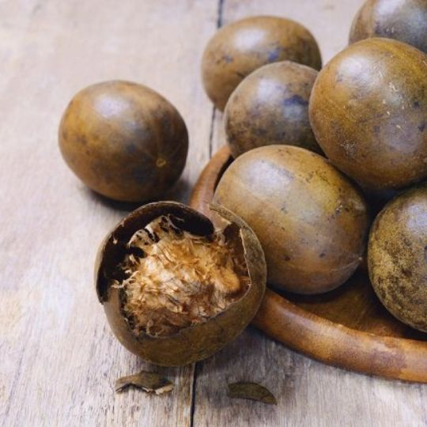

Kesehatan Optimal Berawal dari
Solusi Alam yang Teruji
Memperkenalkan Ecodiamonk: Formulasi herbal konsentrat dari Daun Kelor, Sirsak, dan Lo Han Kuo untuk memelihara daya tahan tubuh secara efektif.
Dapatkan Informasi & ProdukFakta dan Keunggulan Ecodiamonk
Poin-poin fundamental yang menjadikan Ecodiamonk sebagai suplemen herbal yang kredibel dan dapat diandalkan.
Komposisi Alami
Diformulasikan dari 100% ekstrak herbal murni tanpa campuran kimia.
Manfaat Multiguna
Membantu memelihara daya tahan tubuh dan mendukung proses penyembuhan.
Legalitas Terjamin
Memiliki izin edar resmi dari BPOM dan sertifikasi Halal MUI.
Konsumsi Praktis
Metode konsumsi modern dengan cara diteteskan ke dalam air minum.

Profil Produk Ecodiamonk
Ecodiamonk adalah jamu herbal dalam bentuk sediaan tetes yang diproduksi sesuai standar oleh PT. BAYU INSAN GEMILANG PROFITINDO. Produk ini dirancang sebagai suplemen untuk memelihara kesehatan.
Tujuan utama formulasi produk ini adalah untuk menyediakan alternatif pemeliharaan kesehatan yang berasal dari sumber-sumber alami yang telah terbukti secara empiris dan aman untuk dikonsumsi.
Analisis Komposisi Herbal Unggulan
Daun Kelor
Kaya akan senyawa antioksidan, beragam nutrisi, dan terbukti secara empiris membantu menjaga kestabilan gula darah dan tekanan darah.
Daun Sirsak
Memiliki properti sebagai antivirus dan antibakteri. Senyawa aktif di dalamnya juga efektif membantu menurunkan kadar kolesterol darah.
Buah Lo Han Kuo
Berfungsi sebagai pemanis alami non-kalori yang aman bagi penderita diabetes, sekaligus memiliki khasiat sebagai antioksidan kuat.
Galeri Produk & Komposisi

 

Informasi Proses Detoksifikasi (Healing Crisis)
Konsumsi awal dapat menimbulkan reaksi fisiologis sementara sebagai bagian dari proses adaptasi dan pembuangan toksin dari dalam tubuh. Kondisi ini normal dan akan stabil seiring waktu.
Data Testimoni Pengguna
"Diabetes Normal Setelah Konsumsi Ecodiamonk"
"Testimoni Badan Pegel Ecodiamonk"
"Stroke Sembuh 1 Minggu Setelah Konsumsi Ecodiamonk"
"Asam Urat Sembuh Setelah Konsumsi Ecodiamonk"
"Kista Sembuh Dalam 2 Hari Setelah Konsumsi Ecodiamonk"
"Ecodiamonk Jossss di Ranjang, Stamina Lelaki Perkasa"
"Kolesterol Turun Drastis Setelah Konsumsi Ecodiamonk"
"Testimoni Ecodiamonk Untuk Sakit Komplikasi"
Prosedur Konsumsi Standar
Dosis Umum
- Siapkan ±250 ml air mineral, suhu ruang atau hangat.
- Teteskan 2-3 tetes Ecodiamonk.
- Untuk Pemeliharaan Kesehatan: Konsumsi 2x sehari.
- Untuk Terapi Pendamping: Konsumsi 3-4x sehari.
Perhatian Khusus
- Bagi penderita gangguan ginjal dan jantung, disarankan memulai dengan dosis 1 tetes per hari untuk adaptasi.
- Dianjurkan untuk berdoa sesuai keyakinan masing-masing sebelum mengonsumsi.
Ambil Langkah Pertama Anda
Hubungi kami untuk informasi produk lebih lanjut, konsultasi, dan prosedur pemesanan.

TR 202601521

Tersertifikasi Halal